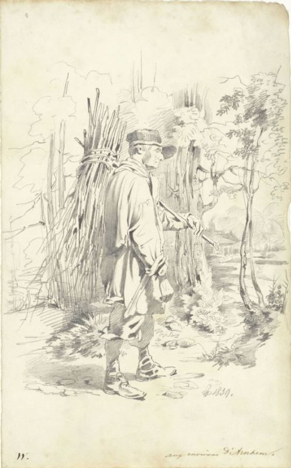
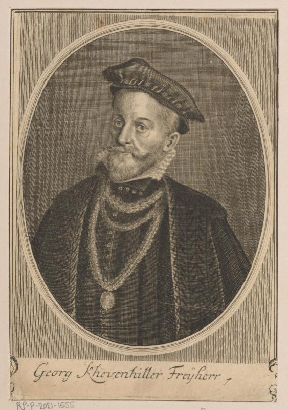
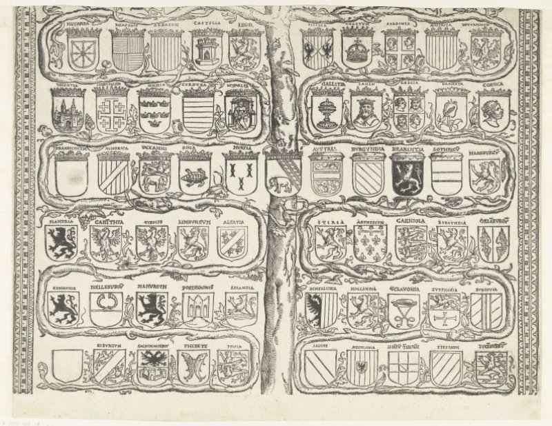

T_star-T0 : 12 images du dev, |Δ H-F1| décroissant (égalités : identifiant)
https://id.rijksmuseum.nl/200732191 · drawing · Δ = +0.489

Vérité (projetée)
44A3 — flag, colours (as symbol of the state, etc.)
T0 (H-F1 0.400)
4 — Society, Civilization, Culture
T_star (H-F1 0.889)
44A31 — banner, standard (as symbol of the state, etc.)
https://id.rijksmuseum.nl/200362284 · drawing · Δ = -0.489

Vérité (projetée)
41C741(+1) — (no own text)
T0 (H-F1 0.632)
31A235 — sitting figure
41C741 — pipe ~ tobacco
T_star (H-F1 0.143)
31A235 — sitting figure
4 — Society, Civilization, Culture
https://id.rijksmuseum.nl/20028436 · painting · Δ = +0.436

Vérité (projetée)
73C121 — baptism of Christ in the river Jordan: John the Baptist pouring out water on Christ's head: the Holy Ghost descends
T0 (H-F1 0.364)
11 — Christian religion
73D — Passion of Christ
T_star (H-F1 0.800)
11 — Christian religion
73C121 — baptism of Christ in the river Jordan: John the Baptist pouring out water on Christ's head: the Holy Ghost descends
73E — events from Resurrection to Pentecost (Matthew 28; Mark 16; Luke 24; John 20-21; Acts 1:3-11); Mary's and Joseph's death
https://id.rijksmuseum.nl/200151457 · print · Δ = +0.416

Vérité (projetée)
61B2 — historical persons
41D26611 — pearl; pearl necklace
T0 (H-F1 0.353)
3 — Human Being, Man in General
4 — Society, Civilization, Culture
61BB — historical persons (portraits and scenes from the life) - BB - woman
T_star (H-F1 0.769)
3 — Human Being, Man in General
41D26611 — pearl; pearl necklace
48C — the arts; artists
61BB — historical persons (portraits and scenes from the life) - BB - woman
https://id.rijksmuseum.nl/200217474 · print · Δ = -0.381

Vérité (projetée)
45D311 — commander-in-chief, general, marshal
61B2 — historical persons
T0 (H-F1 0.667)
45 — warfare; military affairs
61B — historical persons (portraits and scenes from the life)
T_star (H-F1 0.286)
45 — warfare; military affairs
48C — the arts; artists
https://id.rijksmuseum.nl/200732152 · drawing · Δ = +0.381

Vérité (projetée)
44A3 — flag, colours (as symbol of the state, etc.)
T0 (H-F1 0.286)
25 — earth, world as celestial body
4 — Society, Civilization, Culture
T_star (H-F1 0.667)
2 — Nature
44A3 — flag, colours (as symbol of the state, etc.)
45D1 — (military) flags and standards
https://id.rijksmuseum.nl/200113828 · drawing · Δ = +0.367

Vérité (projetée)
11P31521 — monk(s), friar(s)
11P31514 — cloisters ~ monastery
T0 (H-F1 0.167)
11Q713 — interior of church
3 — Human Being, Man in General
48C1622 — vault ~ architecture
T_star (H-F1 0.533)
11P31521 — monk(s), friar(s)
11Q713 — interior of church
3 — Human Being, Man in General
48C1622 — vault ~ architecture
https://id.rijksmuseum.nl/200439600 · print · Δ = +0.339

Vérité (projetée)
11L53 — theologian
61B2 — historical persons
T0 (H-F1 0.286)
11H — saints
49 — education, science and learning
T_star (H-F1 0.625)
11L53 — theologian
49 — education, science and learning
https://id.rijksmuseum.nl/200362335 · drawing · Δ = +0.333

Vérité (projetée)
47I84 — woodcutting, woodcutter ~ forestry
41D3 — folk costume, regional costume
T0 (H-F1 0.167)
3 — Human Being, Man in General
4 — Society, Civilization, Culture
61 — historical events and situations; historical persons
T_star (H-F1 0.500)
3 — Human Being, Man in General
47I — agriculture, cattle-breeding, horticulture, flowerculture, etc.
https://id.rijksmuseum.nl/200796141 · print · Δ = -0.333

Vérité (projetée)
61B2 — historical persons
T0 (H-F1 0.667)
41D2 — clothes, costume
61B2 — historical persons
T_star (H-F1 0.333)
41D2 — clothes, costume
46A1241(GOLDEN FLEECE) — knighthood order of the Golden Fleece
61B — historical persons (portraits and scenes from the life)
https://id.rijksmuseum.nl/200126689 · print · Δ = +0.328

Vérité (projetée)
44A1 — coat of arms (as symbol of the state, etc.)
42G1 — family lineage, pedigree, genealogical tree or table
T0 (H-F1 0.143)
46A122 — armorial bearing, heraldry
49 — education, science and learning
T_star (H-F1 0.471)
44A1 — coat of arms (as symbol of the state, etc.)
46A122 — armorial bearing, heraldry
49 — education, science and learning
https://id.rijksmuseum.nl/200316632 · drawing · Δ = -0.328

Vérité (projetée)
25G41(LILY) — flowers: lily
48A9833 — flowers ~ ornament
T0 (H-F1 0.471)
25G — plants; vegetation
4 — Society, Civilization, Culture
T_star (H-F1 0.143)
4 — Society, Civilization, Culture